Chapter 6 中断管理
章节介绍和范围
事件
嵌入式实时系统必须对源自环境的事件做出响应。例如，到达以太网外设的数据包（事件）可能需要传递到 TCP/IP 栈进行处理（操作）。非平凡的系统必须服务于来自多个源的事件，所有这些源都有不同的处理开销和响应时间要求。在每种情况下，都必须对最佳事件处理实施策略作出判断：
- 如何检测事件？通常使用中断，但也可以轮询输入。
- 当使用中断时，应在中断服务例程 (ISR) 内部执行多少处理，在外部执行多少处理？通常希望每个 ISR 尽可能短。
- 如何将事件与主 (非 ISR) 代码通信，以及如何构造此代码以最佳地适应潜在异步事件的处理？
FreeRTOS 不会对应用程序设计者强加任何特定的事件处理策略，但确实提供了允许以简单且可维护的方式实现所选策略的功能。
重要的是区分任务的优先级和中断的优先级：
- 任务是与运行 FreeRTOS 的硬件无关的软件功能。 任务的优先级由应用程序编写者在软件中分配，软件算法 (调度器) 决定哪个任务将处于运行状态。
- 虽然中断服务例程是用软件编写的，但它是一个硬件特性，因为硬件控制哪个中断服务例程将运行，以及何时运行。任务只会在没有 ISR 运行时运行，因此最低优先级的中断将中断最高优先级的任务，并且任务无法抢占 ISR 。
所有运行 FreeRTOS 的体系结构都能够处理中断，但是与中断进入和中断优先级分配有关的架构之间有所不同。
范围
本章旨在让读者更好地理解：
- 哪些 FreeRTOS API 函数可以在中断服务程序中使用。
- 将中断处理延迟到任务的方法。
- 如何创建和使用二进制信号量和计数信号量。
- 二进制和计数信号量之间的区别。
- 如何使用队列将数据传入和传出中断服务程序。
- 中断嵌套模型可用于一些 FreeRTOS 移植。
从 ISR 使用 FreeRTOS API
中断安全 API
通常需要从中断服务例程 (ISR) 中使用 FreeRTOS API 函数提供的功能，但是许多FreeRTOS API 函数执行的操作在 ISR 中无效——其中最值得注意的是将调用 API 函数的任务置于阻塞状态； 如果从 ISR 调用 API 函数，则它不是从任务调用的，所以没有调用任务可以被置于阻塞状态。 FreeRTOS 通过提供一些 API 函数的两个版本来解决这个问题；一个版本用于任务，另一个版本用于 ISR。打算从 ISR 中使用的函数在其名称后附加了 “FromISR” 。
注意：切勿从 ISR 调用名称中不含 “
FromISR” 的 FreeRTOS API 函数。
使用单独的中断安全 API 的好处
具有用于中断的单独 API 可以使任务代码更高效，ISR 代码更有效，并且进入中断更简单。 要了解原因，请考虑另一种解决方案，该解决方案将提供可以从任务和 ISR 调用的每个 API 函数的单个版本。如果可以从任务和 ISR 调用相同版本的 API 函数，则：
- API 函数将需要额外的逻辑来确定它们是从任务还是 ISR 调用的。额外的逻辑将引入通过函数的新路径，使函数更长，更复杂，更难测试。
- 当从任务调用函数时，某些 API 函数参数将过时，而当从 ISR 调用函数时，其他 API 函数参数将过时。
- 每个 FreeRTOS 移植都需要提供一个用于确定执行上下文 (任务或ISR) 的机制。
- 难以确定执行上下文（任务或 ISR）的架构将需要额外的、浪费的、使用起来更复杂的非标准中断进入代码，允许软件提供执行上下文。
使用单独的中断安全 API 的缺点
拥有两个版本的一些 API 函数可以提高任务和 ISR 的效率，但会带来新的问题；有时需要从任务和 ISR 调用不属于 FreeRTOS API 的函数，但使用 FreeRTOS API。
这通常只是集成第三方代码时的问题，因为这是软件设计不受应用程序编写者控制的唯一时候。 如果这确实成为一个问题，那么可以使用以下技术之一来克服该问题：
将中断处理延迟到任务，因此只从任务的上下文中调用 API 函数。
本书的下一节将介绍延迟中断处理。
如果您使用的是支持中断嵌套的 FreeRTOS 移植，则使用以 “
FromISR” 结尾的 API 函数版本，因为该版本可以从任务和 ISR 中调用（反之则不然，不以 “FromISR” 结尾的 API 函数不能从 ISR 调用）。第三方代码通常包括一个 RTOS 抽象层，可以实现该抽象层来测试调用函数的上下文 (任务或中断) ，然后调用适合该上下文的 API 函数。
xHigherPriorityTaskWoken 参数
本节介绍了 xHigherPriorityTaskWoken 参数的概念。 如果您还没有完全理解本节，请不要担心，因为后续章节提供了实际示例。
如果上下文切换是由中断执行的，那么中断退出时运行的任务可能与进入中断时运行的任务不同——中断将中断一个任务，但返回到另一个任务。
一些 FreeRTOS API 函数可以将任务从阻塞状态移动到就绪状态。 这已经在诸如 xQueueSendToBack() 之类的函数中看到了，如果有一个任务在阻塞状态等待数据在主题队列上可用，它将解除对任务的阻塞。
如果被 FreeRTOS API 函数解除阻塞的任务的优先级高于处于运行状态下的任务的优先级，那么根据 FreeRTOS 调度策略，应该切换到更高优先级的任务。 实际切换到更高优先级任务的时间取决于调用 API 函数的上下文：
如果从任务中调用 API 函数
如果在
FreeRTOSConfig.h中将configUSE_PREEMPTION设置为 1，那么在 API 函数中会自动切换到更高优先级的任务——所以在 API 函数退出之前。 这已经在图 43 中看到，其中写入定时器命令队列导致在写入命令队列的函数退出之前切换到 RTOS 守护任务。如果从中断调用 API 函数
中断内不会自动切换到更高优先级的任务。 相反，设置了一个变量来通知应用程序编写者应该执行上下文切换。 中断安全 API 函数（以 “
FromISR” 结尾的函数）有一个名为pxHigherPriorityTaskWoken的指针参数，用于此目的。如果应该执行上下文切换，则中断安全 API 函数会将
*pxHigherPriorityTaskWoken设置为pdTRUE。 为了能够检测到这种情况，pxHigherPriorityTaskWoken指向的变量在第一次使用之前必须初始化为pdFALSE。如果应用程序编写者选择不从 ISR 请求上下文切换，则更高优先级的任务将保持就绪状态，直到调度程序下次运行——在最坏的情况下将在下一次滴答中断期间。
FreeRTOS API 函数只能将
*pxHighPriorityTaskWoken设置为pdTRUE。 如果一个 ISR 调用了多个 FreeRTOS API 函数，那么可以在每个 API 函数调用将同一个的变量作为pxHigherPriorityTaskWoken参数传递，并且只需要在第一次使用该变量之前初始化为pdFALSE。
上下文切换不会在 API 函数的中断安全版本中自动发生的原因有几个:
避免不必要的上下文切换
在任务需要执行任何处理之前，中断可能会执行多次。 例如，考虑一个任务处理一个由中断驱动的
UART接收到的字符串的场景； 每次接收到一个字符时，UART ISR都切换到任务是一种浪费，因为任务只有在接收到完整字符串后才能执行。控制执行顺序
中断可能偶尔发生，而且发生的时间不可预测。 专业的 FreeRTOS 用户可能希望暂时避免在其应用程序中的特定点不可预测地切换到不同的任务——尽管这也可以使用 FreeRTOS 调度程序锁定机制来实现。
可移植性
这是可以在所有FreeRTOS移植上使用的最简单的机制。
效率
面向较小处理器架构的移植仅允许在 ISR 的最后请求上下文切换，而消除该限制将需要额外且更复杂的代码。 它还允许在同一 ISR 内多次调用 FreeRTOS API 函数，而不会在同一 ISR 内生成多个上下文切换请求。
在 RTOS 滴答定时中断执行
正如本书后面将看到的，可以将应用程序代码添加到 RTOS 滴答中断中。 尝试在滴答中断内进行上下文切换的结果取决于正在使用的 FreeRTOS 移植。在最好的情况下，它只会导致不必要的调度程序调用。
pxHigherPriorityTaskWoken参数的使用是可选的。 如果不需要，则将pxHigherPriorityTaskWoken设置为NULL。
portYIELD_FROM_ISR() 和 portEND_SWITCHING_ISR() 宏
本节介绍用于从 ISR 请求上下文切换的宏。 如果您尚未完全理解本节，请不要担心，因为后续章节提供了实际示例。
taskYIELD() 是一个宏，可以在任务中调用以请求上下文切换。 portYIELD_FROM_ISR() 和 portEND_SWITCHING_ISR() 都是 taskYIELD() 的中断安全版本。 portYIELD_FROM_ISR() 和 portEND_SWITCHING_ISR() 都以同样的方式使用，并且做同样的事情[1]。 某些 FreeRTOS 移植仅提供两个宏之一。 较新的 FreeRTOS 移植提供这两种宏。本书中的示例使用 portYIELD_FROM_ISR()。
[1] : 从历史上看，portEND_SWITCHING_ISR() 是要求中断处理程序使用汇编代码包装器的 FreeRTOS 移植中使用的名称，而 portYIELD_FROM_ISR() 是允许整个中断处理程序用 C 编写的 FreeRTOS 移植中使用的名称。
portEND_SWITCHING_ISR( xHigherPriorityTaskWoken );
清单 87. portEND_SWITCHING_ISR() 宏
portYIELD_FROM_ISR( xHigherPriorityTaskWoken );
清单 88. portYIELD_FROM_ISR() 宏
从中断安全 API 函数传出的 xHigherPriorityTaskWoken 参数可以直接用作 portYIELD_FROM_ISR() 调用中的参数。
如果 portYIELD_FROM_ISR() xHigherPriorityTaskWoken 参数是 pdFALSE(0)，则不请求上下文切换，并且宏不起作用。 如果 portYIELD_FROM_ISR() xHigherPriorityTaskWoken 参数不是 pdFALSE，则请求上下文切换，并且处于运行状态的任务可能会更改。 中断将始终返回到处于运行状态的任务，即使在中断执行期间处于运行状态的任务发生了变化。
大多数 FreeRTOS 移植允许在 ISR 内的任何位置调用 portYIELD_FROM_ISR()。 一些 FreeRTOS 移植（主要用于较小的架构）仅允许在 ISR 的最后调用 portYIELD_FROM_ISR()。
延迟中断处理
通常认为最佳实践是使 ISR 尽可能短。 其原因包括：
- 即使已经为任务分配了非常高的优先级，它们也仅在硬件没有服务中断时运行。
- ISR 可以中断（添加“抖动”）任务的开始时间和执行时间。
- 根据运行 FreeRTOS 的架构，在执行 ISR 时可能无法接受任何新中断，或至少无法接受新中断的子集。
- 应用程序编写者需要考虑并防范任务和 ISR 同时访问变量、外设和内存缓冲区等资源的后果。
- 一些 FreeRTOS 移植允许中断嵌套，但中断嵌套会增加复杂性并降低可预测性。中断越短，嵌套的可能性就越小。
中断服务程序必须记录中断的原因，并清除中断。 中断所需的任何其他处理通常可以在任务中执行，从而允许中断服务程序尽可能快地退出。这称为 "延迟中断处理"，因为中断所需的处理被从 ISR “延迟” 到任务。
将中断处理延迟到任务还允许应用程序编写者相对于应用程序中的其他任务确定处理的优先级，并使用所有 FreeRTOS API 函数。
如果中断处理延迟到的任务的优先级高于任何其他任务的优先级，则处理将立即执行，就像在 ISR 本身中执行处理一样。 这种情况如图 48 所示，其中任务 1 是一个正常的应用程序任务，任务 2 是中断处理被延迟到的任务。
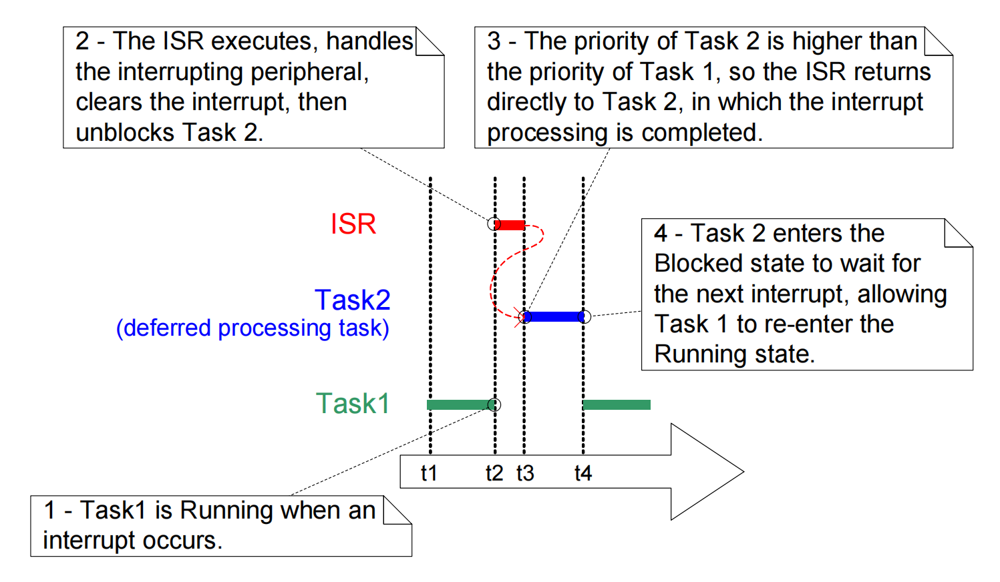
在图 48 中，中断处理从 t2 时刻开始，实际上在 t4 时刻有效地结束，但只有 t2 和 t3 时刻之间的时间段用于 ISR。 如果未使用延迟中断处理，则时间 t2 和 t4 之间的整个时间段都将花费在 ISR 中。
对于何时最好执行 ISR 中的中断所需的所有处理，以及何时最好将部分处理延迟到任务，没有绝对的规则。在以下情况下，将处理延迟到任务最有用 :
- 中断所必需的处理不是微不足道的。 例如，如果中断只是存储模数转换的结果，那么几乎可以肯定这最好在 ISR 内部执行，但如果转换结果还必须通过软件过滤器，那么可能最好是在任务中执行过滤器。
- 中断处理可以方便地执行无法在 ISR 内部执行的操作，例如写入控制台或分配内存。
- 中断处理不是确定性的——这意味着事先不知道处理将要花费多长时间。
以下各节描述并演示了本章到目前为止介绍的概念，包括可用于实现延迟中断处理的 FreeRTOS 功能。
用于同步的二进制信号量
二进制信号量 API 的中断安全版本可以用于在每次特定中断发生时解除任务阻塞，从而有效地将任务与中断同步。这允许大部分中断事件处理在同步任务中实现，只有非常快和短的部分直接留在ISR中。如前一节所述，二进制信号量用于将中断处理 “延迟” 到任务[1]。
[1] 任务：使用直接到任务的通知将一个任务从中断中解禁，比使用二进制信号量更有效率。直接到任务的通知在第9章 “任务通知 “中才会涉及。
正如之前在图 48 中所展示的，如果中断处理是特别时间关键的，则可以设置延迟处理任务的优先级，以确保该任务总是抢占系统中的其他任务。然后可以实现 ISR 以包含对 portYIELD_FROM_ISR() 的调用，确保 ISR 直接返回到中断处理被延迟到的任务。这样做的效果是确保整个事件处理在在时间上连续执行 ( 没有中断 )，就好像它全部在ISR本身内实现一样。图 49 重复了图 48 中的场景，但是更新了文本以描述如何使用信号量来控制延迟处理任务的执行。
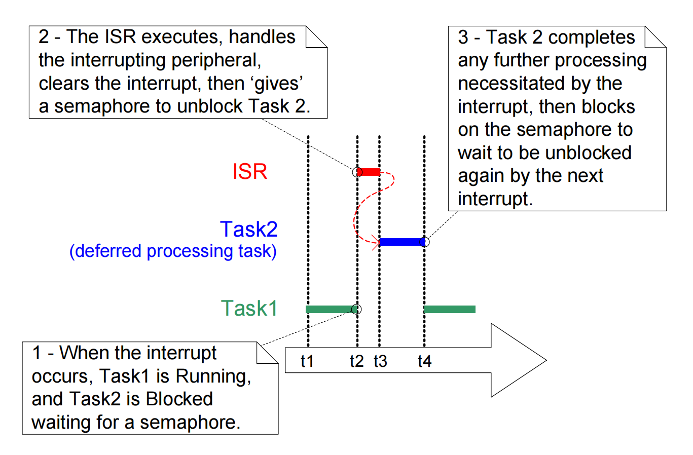
延迟处理任务使用对信号量的阻塞 "take" 调用作为进入阻塞状态以等待事件发生的方法。当事件发生时，ISR 对同一信号量使用 "give" 操作来解锁任务，以便继续进行所需的事件处理。
"Taking a semaphore (获取信号量)" 和 "giving a semaphore (给出信号量)" 是根据其使用场景具有不同含义的概念。在这种中断同步场景中，二进制信号量在概念上可以被视为长度为 1 的队列。队列在任何时候最多可以包含一项，因此始终要么为空，要么为满（因此是二进制）。通过调用 xSemaphoreTake()，中断处理被延迟到的任务有效地试图用一个阻塞时间从队列中读取数据，从而导致任务在队列为空时进入阻塞状态。当事件发生时，ISR 使用 xSemaphoreGiveFromISR() 函数将一个令牌（信号量）放入队列中，使队列变满。这将导致任务退出阻塞状态并移除令牌，使队列再次为空。当任务完成其处理后，它会再次尝试从队列中读取，并发现队列为空，然后重新进入阻塞状态以等待下一个事件。图 50 演示了这个序列。
图 50 显示了中断 "giving (给出)" 信号量，即使它没有首先 "taking (获取)" 信号量，以及任务 "taking (获取)" 信号量，但从未将其给出 (giving it back)。这就是为什么该场景被描述为在概念上类似于向队列写入和从队列读取的原因。它经常会引起混乱，因为它不遵循与其他信号量使用场景相同的规则，在其他信号量使用场景中，获取 (takes) 信号量的任务必须始终将其给出 (give it back)，例如第 7 章 “资源管理” 中描述的场景。

xSemaphoreCreateBinary() API函数
FreeRTOS V9.0.0 还包括 xSemaphoreCreateBinaryStatic() 函数，该函数在编译时静态地分配创建二进制信号量所需的内存 : 所有各种类型的 FreeRTOS 信号量的句柄都存储在 SemaphoreHandle_t 类型的变量中。
在使用信号量之前，必须先创建它。要创建一个二进制信号量，请使用 xSemaphoreCreateBinary() API 函数 [1]。
[1] : 一些信号量 API 函数实际上是宏，而不是函数。为简单起见，在本书中，它们都被称为函数。
SemaphoreHandle_t xSemaphoreCreateBinary( void );
清单 89. xSemaphoreCreateBinary() API 函数原型
表 33. xSemaphoreCreateBinary() 的返回值
| 参数名称 | 描述 |
|---|---|
| 返回值 | 如果返回的是 NULL，则无法创建信号量，因为没有足够的堆内存可供FreeRTOS分配给信号量数据结构。如果返回的值不是 NULL，则表明该信号已被成功创建。返回值应存储为创建的信号量的句柄。 |
xSemaphoreTake() API函数
"Taking (获取)" 信号量意味着 "obtain (获得)" 或 receive (接收) 信号量。仅当信号量可用时才可以获取该信号量。
所有不同类型的 FreeRTOS 信号量，除了递归互斥锁，都可以使用 xSemaphoreTake() 函数。
xSemaphoreTake() 不能从一个中断服务例程中使用。
BaseType_t xSemaphoreTake( SemaphoreHandle_t xSemaphore, TickType_t xTicksToWait );
清单 90. xSemaphoreTake() 的 API 函数原型
表 34. xSemaphoreTake() 参数和返回值
| 参数名称/返回值 | 描述 |
|---|---|
xSemaphore |
被 "taking (获取)" 的信号量。信号量由 SemaphoreHandle_t 类型的变量引用。必须先显式创建它，然后才能使用它。 |
xTicksToWait |
如果信号量尚不可用，任务应保持在阻塞状态以等待信号量的最长时间。 如果 xTicksToWait 为 0，那么如果信号量不可用，xSemaphoreTake() 将立即返回。阻塞时间是以滴答周期指定的，因此它表示的绝对时间取决于滴答频率。宏pdMS_TO_TICKS() 可用于将以毫秒为单位指定的时间转换为以滴答为单位指定的时间。 如果在 FreeRTOSConfig.h 中将 INCLUDE_vTaskSuspend 设置为 1，则将 xTicksToWait 设置为 portMAX_DELAY 将导致任务无限期等待 ( 没有超时期限 )。 |
| 返回值 | 有两个可能的返回值： 1. pdPASS仅当调用 xSemaphoreTake() 成功获取信号量时才返回 pdPASS。如果指定了阻塞时间（ xTicksToWait 不是 0 ），则调用任务可能被置于阻塞状态以等待信号量 (如果信号量不是立即可用)，但信号量在阻止时间到期之前变为可用。2. pdFALSE信号量不可用。 如果指定了阻塞时间（ xTicksToWait 不是0），则调用任务将被置于阻塞状态以等待信号量变为可用，但阻塞时间在此之前已过期。</p> |
xSemaphoreGiveFromISR() API函数
可以使用xSemaphoreGiveFromISR()函数 "giving (给出)" 二进制和计数信号量。
计数信号量将在本书后面的章节中介绍。
xSemaphoreGiveFromISR() 是 xSemaphoreGive() 的中断安全版本，所以具有 pxHigherPriorityTaskWoken 参数，这在本章开始时已经描述过。
BaseType_t xSemaphoreGiveFromISR( SemaphoreHandle_t xSemaphore,
BaseType_t *pxHigherPriorityTaskWoken );
清单91. xSemaphoreGiveFromISR() API 函数原型
表35. xSemaphoreGiveFromISR() 参数和返回值
| 参数名称/返回值 | 描述 |
|---|---|
xSemaphore |
将要被 "给出" 的信号量。一个信号量是由一个类型为 SemaphoreHandle_t 的变量来引用的，并且必须在使用前显式创建。 |
pxHigherPriorityTaskWoken |
单个信号量可能会阻塞一个或多个任务，等待信号量可用。调用 xSemaphoreGiveFromISR() 可以使信号量可用，从而使等待信号量的任务离开阻塞状态。如果调用 xSemaphoreGiveFromISR() 导致一个任务离开阻塞状态，并且未阻塞任务的优先级高于当前正在执行的任务 (被中断的任务)，那么，在内部，xSemaphoreGiveFromISR() 将 *pxHigherPriorityTaskWoken 设置为 pdTRUE。如果 xSemaphoreGiveFromISR() 把这个值设置为 pdTRUE。则通常应在退出中断之前执行上下文切换。这将确保中断直接返回到最高优先级就绪状态任务。 |
| 返回值 | 有两个可能的返回值： 1. pdPASS只有当对 xSemaphoreGiveFromISR() 的调用成功时，才会返回 pdPASS。2. pdFAIL如果信号量已经可用，则不能被 "给出"，并且 xSemaphoreGiveFromISR() 将返回 pdFAIL。</p> |
示例 16. 使用二进制信号量使一个任务与中断同步
此示例使用二进制信号量从中断服务例程中取消阻阻塞任务 —- 有效地将任务与中断同步。
一个简单的周期性任务被用来每 500 毫秒产生一次软件中断。一个软件中断是为了方便而使用的，由于在某些目标环境中挂钩到真实中断的复杂性，因此使用软件中断是为了方便。清单 92 显示了周期性任务的实现。请注意，该任务在生成中断之前和之后都打印出一个字符串。这允许在执行示例时产生的输出中观察执行顺序。
/* 本例中使用的软件中断的编号。显示的代码来自 Windows 工程，
其中数字0到2是由 FreeRTOS Windows 移植本身使用的，
所以 3 是应用程序可用的第一个数字。*/
#define mainINTERRUPT_NUMBER 3
static void vPeriodicTask( void *pvParameters )
{
const TickType_t xDelay500ms = pdMS_TO_TICKS(500UL);
/* 和大多数任务一样，这个任务是在一个无限循环中实现的。*/
for( ;; )
{
/* 阻塞直到再次产生软件中断。*/
vTaskDelay( xDelay500ms );
/* 生成中断，在中断产生前后打印信息。这样就可以从输出中看出执行的顺序。
用于生成软件中断的语法取决于所使用的 FreeRTOS 移植。下面使用的语法只能用于
FreeRTOS Windows 移植，在该移植中，这种中断只是模拟的。*/
vPrintString( "Periodic task - About to generate an interrupt.\r\n" );
vPortGenerateSimulatedInterrupt( mainINTERRUPT_NUMBER );
vPrintString( "Periodic task - Interrupt generated.\r\n\r\n\r\n" );
}
}
清单 92. 示例 16 中周期性生成软件中断的任务的实现
清单 93 显示了中断处理被延迟到的任务的实现 —— 通过使用二进制信号量与软件中断同步的任务。同样，在任务的每次迭代中都会打印出一个字符串，因此从执行示例时产生的输出中可以明显看出任务和中断执行的顺序。
需要注意的是，虽然清单 93 中所示的代码足够满足由软件生成中断的示例 16 ，但它不足以满足由硬件外设生成中断的场景。
static void vHandlerTask( void *pvParameters )
{
/* 和大多数任务一样，这个任务是在一个无限循环中实现的。 */
for (;;)
{
/* 使用信号量来等待事件。信号量是在调度程序启动之前创建的，
因此在此任务第一次运行之前。任务无限期地阻塞，
这意味着这个函数调用只会在成功获得信号量后返回——
所以不需要检查 xSemaphoreTake() 返回的值。*/
xSemaphoreTake(xBinarySemaphore, portMAX_DELAY);
/* 要到达这里，这个事件必须已经发生。处理该事件 (在本例中，只是打印出一条信息)。 */
vPrintString("Handler task - Processing event.\r\n");
}
}
清单 93. 示例 16 中延迟中断处理的任务 (与中断同步的任务) 的实现。
清单 94 显示了 ISR 。除了 "给出" 信号量以取消阻塞中断处理被延迟到的任务之外，几乎没有什么作用。
注意 xHigherPriorityTaskWoken 变量是如何被使用的。在调用 xSemaphoreGiveFromISR() 之前，它被设置为 pdFALSE ，然后在调用 portYIELD_FROM_ISR() 时作为参数使用。如果 xHigherPriorityTaskWoken 等于 pdTRUE，则将在 portYIELD_FROM_ISR() 宏请求上下文切换。
ISR 的原型和用于强制上下文切换的宏，对于FreeRTOS Windows 移植都是正确的，对于其他 FreeRTOS 移植可能有所不同。请参阅 www.example.com 网站上的移植特定文档页面，以及 FreeRTOS 下载中提供的示例，以查找您正在使用的移植所需的语法。
与运行 FreeRTOS 的大多数架构不同，FreeRTOS 的 Windows 移植需要一个 ISR 来返回一个值。与 Windows 移植一起提供的 portYIELD_FROM_ISR() 宏的实现包括 return 语句，因此清单 94 没有显示显式返回的值。
static uint32_t ulExampleInterruptHandler(void)
{
BaseType_t xHigherPriorityTaskWoken;
/* xHigherPriorityTaskWoken参数必须被初始化为pdFALSE，
因为如果需要进行上下文切换，它将在中断安全 API 函数中被设置为 pdTRUE。 */
xHigherPriorityTaskWoken = pdFALSE;
/* “给出” semaphore以解除对任务的阻塞，将 xHigherPriorityTaskWoken
的地址作为中断安全API函数的参数 pxHigherPriorityTaskWoken 传入。 */
xSemaphoreGiveFromISR(xBinarySemaphore, &xHigherPriorityTaskWoken);
/* 将 xHigherPriorityTaskWoken 的值传给 portYIELD_FROM_ISR()。
如果 xHigherPriorityTaskWoken 在 xSemaphoreGiveFromISR() 中被设置为 pdTRUE，
那么调用 portYIELD_FROM_ISR() 将请求进行上下文切换。
如果 xHigherPriorityTaskWoken 仍然是 pdFALSE，
那么调用 portYIELD_FROM_ISR() 将没有任何影响。
与大多数 FreeRTOS 移植不同， Windows 移植要求 ISR 返回一个值 ——
return 语句在 Windows 版本的 portYIELD_FROM_ISR() 中。*/
portYIELD_FROM_ISR(xHigherPriorityTaskWoken);
}
清单 94. 示例 16 中使用的软件中断的 ISR
main() 函数创建二进制信号量，创建任务，安装中断处理 ( interrupt handler ) 程序。并启动调度程序。实现如清单 95 所示。
为安装中断处理程序而调用的函数的语法特定于 FreeRTOS Windows 移植，对于其他 FreeRTOS 移植可能有所不同。请参考 FreeRTOS.org 网站上的特定移植文档页面，以及 FreeRTOS 下载中提供的示例，以找到你正在使用的移植所需的语法。
int main(void)
{
/* 在使用 semaphore 之前，必须显示地创建它。在这个例子中，我们创建了一个 binary semaphore。 */
xBinarySemaphore = xSemaphoreCreateBinary();
/* 检查 semaphore 是否成功创建。*/
if (xBinarySemaphore != NULL)
{
/* 创建 "处理(handler)"任务，该任务是中断处理被延迟到的任务。
这是将与中断同步的任务。处理任务是以高优先级创建的，
以确保它在中断退出后立即运行。
在这种情况下，我们选择了优先级 3 。 */
xTaskCreate(vHandlerTask, "Handler", 1000, NULL, 3, NULL);
/* 创建将定期生成软件中断的任务。这个任务的优先级低于处理任务，
以确保每次处理任务退出阻塞状态时它将被抢占。 */
xTaskCreate(vPeriodicTask, "Periodic", 1000, NULL, 1, NULL);
/* 安装软件中断的处理程序。这样做所需的语法取决于正在使用的FreeRTOS移植。
这里显示的语法只能用于 FreeRTOS windows 移植，在那里这种中断只是模拟的。 */
vPortSetInterruptHandler(mainINTERRUPT_NUMBER, ulExampleInterruptHandler);
/* 启动调度器，使创建的任务开始执行。 */
vTaskStartScheduler();
}
/* 正常情况下，绝对不能达到下面这一行。 */
for (;;);
}
清单 95. 示例 16 中 main() 的实现
示例 16 产生的输出如图 51 所示。正如预期的那样，vHandlerTask() 在中断产生后立即进入了运行状态，因此任务的输出会拆分周期性任务产生的输出。在图52中提供了进一步的解释。
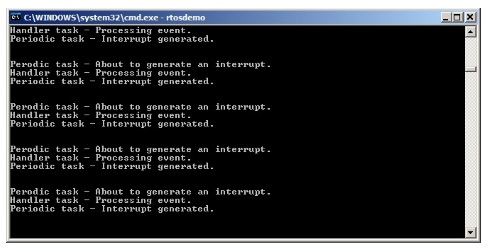
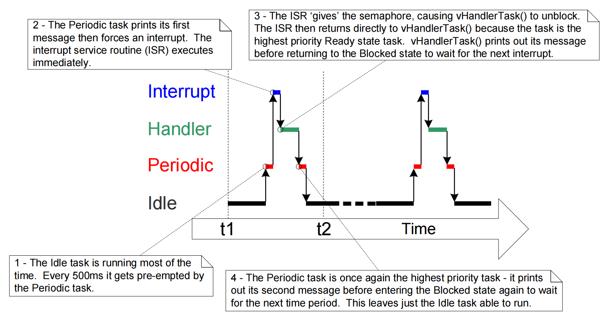
改进示例16中使用的任务的实现
示例 16 使用一个二进制信号量来同步一个任务和一个中断。其执行顺序如下：
- 中断发生了。
- ISR 执行并
"给出"信号量以解除对任务的阻塞。 - 任务在 ISR 之后立即执行，并
"获取"了信号量。 - 任务处理了该事件，然后试图再次
"获取"信号量——进入阻塞状态，因为信号量还不可用（另一个中断还没有发生）。
示例 16 中使用的任务的结构仅在中断以相对低的频率发生时是适当的。要理解其中的原因，我们可以考虑一下，如果在任务完成对第一个中断的处理之前，又发生了第二个、第三个中断，会发生什么：
- 当第二个 ISR 执行时，信号量将为空，所以 ISR 将
"给出"信号量，并且任务将在完成处理第一个事件之后立即处理第二个事件。该场景如图 53 所示。 - 当第三个 ISR 执行时，信号量已经可用，防止ISR再次给出信号量，所以任务不会知道第三个事件已经发生。这种情况在图54中显示。


示例 16 中使用的延迟中断处理任务（如清单 93 所示）被构建为在每次调用 xSemaphoreTake() 之间仅处理一个事件。这对于示例 16 来说已经足够了，因为生成事件的中断是由软件触发的，并且发生在可预测的时间。在实际应用中，中断是由硬件产生的，并且发生的时间是不可预测的。因此，为了最大限度地减少错过中断的机会，必须构建延迟中断处理任务，以便它处理每次调用 xSemaphoreTake() 之间已经可用的所有事件 [1]。清单 96 对此进行了演示，其中展示了如何构建 UART 的延迟中断处理程序。在清单 96 中，假设 UART 在每次接收到字符时生成接收中断，并且 UART 将接收到的字符放入硬件 FIFO ( 硬件缓冲区 ) 中。
[1] 事件：或者，也可以使用计数信号量或直接到任务的通知来对事件进行计数。计数信号量将在下一节中描述。第 9 章 “任务通知” 中描述了直接到任务的通知。直接到任务的通知是首选方法，因为它们在运行时间和 RAM 使用方面都是最有效率的。
示例 16 中使用的延迟中断处理任务还有一个弱点；它在调用 xSemaphoreTake() 时没有使用超时。相反，该任务将 portMAX_DELAY 作为 xSemaphoreTake() 的 xTicksToWait 参数传递，这会导致任务无限期地等待 ( 没有超时期限 ) 信号量可用。无限期超时经常被用在示例代码中，因为它们的使用简化了示例的结构，从而使示例更易于理解。然而，在实际应用中，无限期超时通常是不好的做法，因为它们使得从错误中恢复变得困难。例如，考虑这样的场景：任务正在等待中断以提供信号量，但硬件中的错误状态阻止中断产生 ：
- 如果任务在没有超时的情况下等待，它将不知道错误状态，并将永远等待。
- 如果任务在等待时有超时，则
xSemaphoreTake()将在超时到期时返回pdFAIL，然后任务可以在下次执行时检测并清除错误。清单 96 也演示了这个场景。
static void vUARTReceiveHandlerTask(void *pvParameters)
{
/* xMaxExpectedBlockTime 保存两个中断之间预期的最大时间。 */
const TickType_t xMaxExpectedBlockTime = pdMS_TO_TICKS(500);
/* 和大多数任务一样，这个任务是在一个无限循环中实现的。 */
for (;;)
{
/* semaphore 由 UART 的接收(Rx)中断 "给出"。
等待下一个中断的时间最多为 xMaxExpectedBlockTime 个滴答。*/
if (xSemaphoreTake(xBinarySemaphore, xMaxExpectedBlockTime) == pdPASS)
{
/* 获得了 semaphore 。在再次调用 xSemaphoreTake() 之前，
处理所有挂起的 Rx 事件。每个 Rx 事件都会在UART 的接收FIFO中放置一个字符，
并且假定 UART_RxCount() 返回 FIFO 中的字符数。*/
while (UART_RxCount() > 0)
{
/* 假设 UART_ProcessNextRxEvent() 处理一个Rx字符，
将 FIFO 中的字符数减少 1 。 */
UART_ProcessNextRxEvent();
}
/* 没有更多挂起的 Rx 事件(FIFO 中没有更多的字符)，
所以循环返回并调用 xSemaphoreTake() 以等待下一个中断。
在代码的这一点与调用 xSemaphoreTake() 之间发生的任何中断
都将被锁在 semaphore 中，所以不会丢失。 */
}
else
{
/* 在预期时间内未收到事件。检查并在必要时清除 UART 中
可能阻止 UART 生成更多中断的任何错误条件。 */
UART_ClearErrors();
}
}
}
清单 96. 推荐的延迟中断处理任务的构建，以 UART 接收处理程序为例
计数信号量
正如二进制信号量可以被认为是长度为 1 的队列一样，计数信号量可以被认为是长度大于 1 的队列。任务对存储在队列中的数据不感兴趣，只对队列中的项目数量感兴趣。FreeRTOSConfig.h 中的 configUSE_COUNTING_SEMAPHORES必须设置为 1 ，以使计数信号量可用 。
每次 "给出" 计数信号量时，都会使用其队列中的另一个空间。队列中的项目数是信号量的 "计数(count)" 值。
计数事件 [1]
在这种情况下，事件处理程序将在每次事件发生时
"给出"一个信号量，从而导致信号量的计数值在每次"给出"时递增。任务每次处理事件时都会"获取"一个信号量，从而导致信号量的计数值在每次"获取"时递减。计数值是已发生的事件数与已处理的事件数之间的差值。该机制如图 55 所示。创建用于对事件进行计数的计数信号量时，其初始计数值为 0 。
[1] 使用直接到任务的通知来计数事件比使用计数信号量更有效。 直到第 9 章才介绍直接到任务的通知。
资源管理
在这种情况下，计数值指示可用资源的数量。为了获得对资源的控制，任务必须首先获得信号量——减少信号量的计数值。当计数值达到 0 时，表示没有空闲资源。当任务完成资源使用时，它会归还信号量——增加信号量的计数值。
创建用于管理资源的计数信号量，使其初始计数值等于可用资源的数量。第 7 章介绍了如何使用信号量管理资源。

xSemaphoreCreateCounting() API函数
FreeRTOS V9.0.0还包括 xSemaphoreCreateCountingStatic() 函数，该函数在编译时静态地分配创建计数信号量所需的内存 : 所有不同类型的 FreeRTOS 信号量的句柄都存储在 SemaphoreHandle_t 类型的变量中。
在使用信号量之前，必须先创建它。要创建一个计数信号量，请使用 xSemaphoreCreateCounting() API 函数。
SemaphoreHandle_t xSemaphoreCreateCounting( UBaseType_t uxMaxCount,
UBaseType_t uxInitialCount );
清单97. xSemaphoreCreateCounting() API 函数原型
表36. xSemaphoreCreateCounting() 的参数和返回值
| 参数名称/返回值 | 描述 |
|---|---|
uxMaxCount |
信号量将计数到的最大值。继续用队列来比喻，uxMaxCount 值实际上就是队列的长度。当信号量用于计数或锁存事件时， uxMaxCount 是可以锁存的最大事件数。当信号量用于管理对资源集合的访问时， uxMaxCount 应设置为可用资源的总数。 |
uxInitialCount |
信号量创建后的初始计数值。 当信号量用于计数或锁存事件时， uxInitialCount应设置为 0 ——因为据推测，当创建信号量时，还没有事件发生。当信号量用于管理对资源集合的访问时， uxInitialCount 应设置为等于 uxMaxCount ，因为据推测，当创建信号量时，所有的资源都是可用的。 |
| 返回值 | 如果返回 NULL ，则无法创建信号量，因为没有足够的堆内存可供 FreeRTOS 分配信号量的数据结构。第 2 章提供了更多关于堆内存管理的信息。返回非 NULL 值表示已经成功创建了信号量。返回值应存储为创建的信号量的句柄。 |
例 17. 使用计数信号量将任务与中断同步
示例 17 通过使用计数信号量代替二进制信号量来改进示例 16 的实现。main() 被修改为包含一个对 xSemaphoreCreateCounting() 的调用，以代替对 xSemaphoreCreateBinary() 的调用。新的 API 调用如清单 98 所示。
/* 在使用semaphore之前，必须显式创建它。
在这个例子中，一个 counting semaphore 被创建。
创建的 semaphore 的最大计数值为 10，初始计数值为0。 */
xCountingSemaphore = xSemaphoreCreateCounting(10, 0);
清单 98. 示例 17 中用于创建计数信号量的 xSemaphoreCreateCounting() 调用
为了模拟高频率发生的多个事件，中断服务例程被改变为在每个中断中 "给出" 信号量不止一次。每个事件都被锁存在信号量的计数值中。修改后的中断服务例程如清单 99 所示。
static uint32_t ulExampleInterruptHandler(void)
{
BaseType_t xHigherPriorityTaskWoken;
/* xHigherPriorityTaskWoken 参数必须被初始化为 pdFALSE，
因为如果需要进行上下文切换，它将在中断安全 API 函数中被设置为pdTRUE。 */
xHigherPriorityTaskWoken = pdFALSE;
/* 多次 "给出" semaphore 。第一次将解除对延迟的中断处理任务的阻塞，
接下来的 "给出 "是为了证明 semaphore 锁存事件，
以允许中断延迟到的任务依次处理它们，而不会丢失事件。
这模拟了处理器接收到的多个中断，即使在这种情况下，事件是在单个中断发生内模拟的。 */
xSemaphoreGiveFromISR(xCountingSemaphore, &xHigherPriorityTaskWoken);
xSemaphoreGiveFromISR(xCountingSemaphore, &xHigherPriorityTaskWoken);
xSemaphoreGiveFromISR(xCountingSemaphore, &xHigherPriorityTaskWoken);
/* 将 xHigherPriorityTaskWoken 的值传给portYIELD_FROM_ISR()。
如果 xHigherPriorityTaskWoken 在 xSemaphoreGiveFromISR() 中被设置为pdTRUE，
那么调用 portYIELD_FROM_ISR() 将请求进行上下文切换。
如果 xHigherPriorityTaskWoken 仍然是 pdFALSE ，
那么调用 portYIELD_FROM_ISR() 将没有任何影响。
与大多数 FreeRTOS 移植不同， Windows 移植要求 ISR 返回一个值——
return 语句在 Windows 版本的 portYIELD_FROM_ISR() 中。 */
portYIELD_FROM_ISR(xHigherPriorityTaskWoken);
}
清单 99. 示例 17 所使用的中断服务例程的实现
所有其他的函数与示例 16 中使用的函数相比都没有修改。
示例 17 执行时产生的输出如图 56 所示。可以看出，在每次产生中断时，中断处理被推迟到的任务会处理所有三个 [模拟] 事件。这些事件被锁存在信号的计数值中，允许任务依次处理它们。
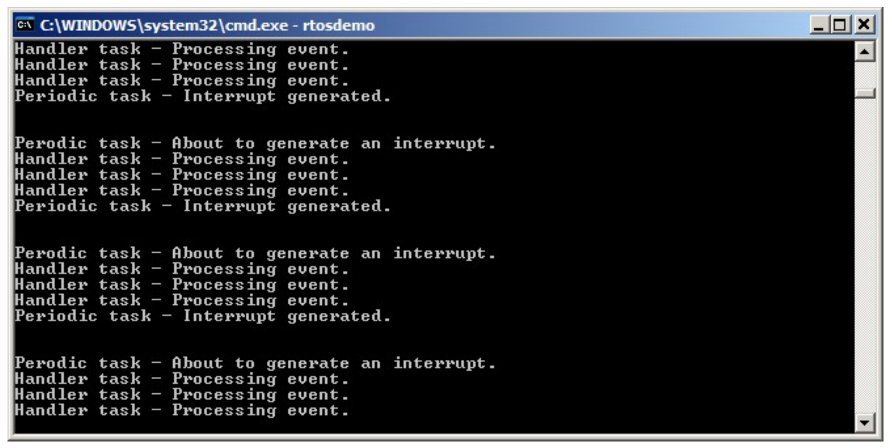
延迟工作到 RTOS 守护进程任务
到目前为止，所介绍的延迟中断处理的示例都要求应用程序编写者为每个使用延迟处理技术的中断创建一个任务。还可以使用 xTimerPendFunctionCallFromISR() [1] API 函数将中断处理延迟到 RTOS 守护进程任务 (daemon task) 中 —— 无需为每个中断创建一个单独的任务。将中断处理延迟到守护任务被称为 "集中延迟中断处理" 。
[1] xTimerPendFunctionCallFromISR()：在第 5 章中指出，守护进程任务最初被称为定时器服务任务，因为它最初只用来执行软件定时器回调函数。因此，
xTimerPendFunctionCall()是在timers.c中实现的，并且根据以实现函数的文件的名称为前缀的惯例，函数的名称以"Timer"为前缀。
第 5 章描述了与软件定时器相关的 FreeRTOS API 函数如何将命令发送到定时器命令队列上的守护进程任务。 xTimerPendFunctionCall() 和 xTimerPendFunctionCallFromISR() API 函数使用相同的定时器命令队列向守护进程任务发送 "execute function (执行函数) "命令。然后，发送到守护进程任务的函数在守护进程任务的上下文中被执行。
集中延迟中断处理的优点包括 ：
较低的资源使用量
它消除了为每个延迟中断创建一个单独任务的需要。
简化的用户模型
延迟中断处理函数是标准 C 函数。
集中式延时中断处理的缺点包括：
灵活性较低
不可能单独设置每个延迟中断处理任务的优先级。每个延迟中断处理函数以守护进程任务的优先级执行。如第5章所述，守护进程任务的优先级由
FreeRTOSConfig.h中的configTIMER_TASK_PRIORITY编译时配置常量设置。较低的确定性
英语原文是 Less determinism ，determinism —— 决定论（认为一切事物具有不以人的意志为转移的必然性）。结合下文， Less determinism 的意思应该是 : 当我们使用守护进程任务来延迟中断处理时，守护进程任务可能还同时用于处理软件定时器命令，这会导致中断处理的时间的确定性下降 ( 我猜的 )
xTimerPendFunctionCallFromISR()将一个命令发送到定时器命令队列的尾部。在xTimerPendFunctionCallFromISR()将"execute function (执行函数)"命令发送到队列之前，守护进程任务将处理定时器命令队列中已有的命令。
不同的中断有不同的时序约束，因此通常在同一应用程序中使用两种延迟中断处理的方法。
xTimerPendFunctionCallFromISR() API 函数
xTimerPendFunctionCallFromISR() 是 xTimerPendFunctionCall() 的中断安全版本。这两个 API 函数都允许由应用程序编写者提供的函数由 RTOS 守护进程任务执行，因此在 RTOS 守护进程任务的上下文中执行。要执行的函数以及函数输入参数的值都被发送到计时器命令队列上的守护进程任务。因此，该函数实际执行的时间取决于守护程序任务相对于应用程序中其他任务的优先级。
BaseType_t xTimerPendFunctionCallFromISR( PendedFunction_t xFunctionToPend,
void *pvParameter1,
uint32_t ulParameter2,
BaseType_t *pxHigherPriorityTaskWoken );
清单 100. xTimerPendFunctionCallFromISR() API 函数原型
void vPendableFunction( void *pvParameter1, uint32_t ulParameter2 );
清单101. xTimerPendFunctionCallFromISR() 的 xFunctionToPend 参数中传递的函数必须符合的原型。
表37. xTimerPendFunctionCallFromISR() 参数和返回值
| 参数名称/返回值 | 描述 |
|---|---|
xFunctionToPend |
指向将在守护进程任务中执行的函数的指针 (实际上，就是函数名称 ) 。函数的原型必须与清单 101所示的相同。 |
pvParameter1 |
将被传递到由守护任务执行的函数中的值，作为该函数的 pvParameter1 参数。参数具有 void 类型，以允许它用于传递任何数据类型。例如，整数类型可以直接转换为 void ，或者，void *可以用来指向一个结构。 |
ulParameter2 |
将被传递到由守护任务执行的函数中的值，作为该函数的 ulParameter2 参数。 |
pxHigherPriorityTaskWoken |
xTimerPendFunctionCallFromISR() 写入定时器命令队列。如果 RTOS 守护进程任务处于阻塞状态以等待定时器命令队列上的数据可用，那么写入定时器命令队列将使守护进程任务离开阻塞状态。如果守护进程任务的优先级高于当前正在执行的任务 ( 被中断的任务 ) 的优先级，那么在内部，xTimerPendFunctionCallFromISR() 将把 *pxHigherPriorityTaskWoken 设为 pdTRUE。如果 xTimerPendFunctionCallFromISR() 将此值设置为 pdTRUE，那么在退出中断之前必须进行上下文切换。这将确保中断直接返回到守护进程任务，因为守护进程任务将是最高优先级的就绪状态任务。 |
| 返回值 | 有两个可能的返回值： |
示例 18. 集中的延迟中断处理
示例 18 提供了与示例 16 类似的功能，但没有使用信号量，并且不创建专门用于执行中断所必需的处理的任务。相反，该处理由 RTOS 守护进程任务执行。
示例 18 所使用的中断服务例程如清单 102 所示。它调用 xTimerPendFunctionCallFromISR()，将一个指向名为vDeferredHandlingFunction() 的函数的指针传递给守护进程任务。延迟的中断处理由 vDeferredHandlingFunction() 函数执行。
中断服务程序每次执行时都会增加一个名为 ulParameterValue 的变量。ulParameterValue 在对 xTimerPendFunctionCallFromISR() 的调用中被用作 ulParameter2 的值，因此当守护程序任务执行 vDeferredHandlingFunction() 时，也将在对 vDeferredHandlingFunction() 的调用中用作 ulParameter2 的值。在这个例子中没有使用。本例中未使用函数的另一个参数 pvParameter1。
static uint32_t ulExampleInterruptHandler(void)
{
static uint32_t ulParameterValue = 0;
BaseType_t xHigherPriorityTaskWoken;
/* xHigherPriorityTaskWoken 参数必须被初始化为 pdFALSE，
因为如果需要进行上下文切换，它将在中断安全 API 函数中被设置为 pdTRUE。 */
xHigherPriorityTaskWoken = pdFALSE;
/* 将指向中断的延迟处理函数的指针发送到守护进程任务。
不使用延迟处理函数的 pvParameter1 参数，因此只需设置为 NULL。
延迟处理函数的ulParameter2参数用于传递一个数字，
这个数字在每次执行这个中断处理程序时都会递增 1 。 */
xTimerPendFunctionCallFromISR(vDeferredHandlingFunction, /* 要执行的函数。 */
NULL, /* 未使用。 */
ulParameterValue, /* 递增值。 */
&xHigherPriorityTaskWoken);
ulParameterValue++;
/* 将xHigherPriorityTaskWoken 的值传给 portYIELD_FROM_ISR()。
如果 xHigherPriorityTaskWoken 在 xTimerPendFunctionCallFromISR() 中被设置为 pdTRUE，
那么调用 portYELD_FROM_ISR() 将请求进行上下文切换。
如果 xHigherPriorityTaskWoken 仍然是 pdFALSE，
那么调用 portYIELD_FROM_ISR() 将没有任何影响。
与大多数 FreeRTOS 移植不同，Windows 移植要求 ISR 返回一个值——
返回语句在 Windows 版本的 portYIELD_FROM_ISR() 中。 */
portYIELD_FROM_ISR(xHigherPriorityTaskWoken);
}
清单102. 示例18中使用的软件中断处理程序
vDeferredHandlingFunction() 的实现在清单 103 中显示。它打印出一个固定的字符串及其 ulParameter2 的参数值。
vDeferredHandlingFunction() 必须具有清单 101 中所示的原型，尽管在这个例子中，实际上只使用了它的一个参数。
static void vDeferredHandlingFunction(void *pvParameter1, uint32_t ulParameter2)
{
/* 处理事件————在本例中只是打印出一条信息和 ulParameter2 的值。
pvParameter1 在本例中没有使用。 */
vPrintStringAndNumber("Handler function - Processing event ", ulParameter2);
}
清单103. 执行示例18中中断所需的处理的函数
示例 18 使用的 main() 函数在 清单 104 中显示。它比示例 16 使用的 main() 函数更简单，因为它既不创建信号量，也不创建任务来执行延迟中断处理。
vPeriodicTask() 是周期性产生软件中断的任务。它的创建优先级低于守护进程任务的优先级，以确保守护进程任务一离开阻塞状态，它就会被守护进程任务抢占。
int main(void)
{
/* 以低于守护进程任务的优先级创建生成软件中断的任务。
守护进程任务的优先级由 FreeRTOSConfig.h 中的
configTIMER_TASK_PRIORITY 编译时配置常量设置。 */
const UBaseType_t ulPeriodicTaskPriority = configTIMER_TASK_PRIORITY - 1;
/* 创建将周期性生成软件中断的任务。 */
xTaskCreate(vPeriodicTask, "Periodic", 1000, NULL, ulPeriodicTaskPriority, NULL);
/* 安装软件中断的处理程序。执行此操作所需的语法取决于所使用的 FreeRTOS 移植。
这里显示的语法只能用于 FreeRTOS 的 windows 移植，在那里这种中断只是模拟的。 */
vPortSetInterruptHandler(mainINTERRUPT_NUMBER, ulExampleInterruptHandler);
/* 启动调度器，使创建的任务开始执行。 */
vTaskStartScheduler();
/* 正常情况下，不应到达以下行。 */
for (;;)
;
}
清单104. 示例18中 main() 的实现
示例 18 产生的输出如图 57 所示。守护进程任务的优先级高于生成软件中断的任务的优先级，因此一旦生成中断，守护进程任务就会执行 vDeferredHandlingFunction()。这导致 vDeferredHandlingFunction() 输出的消息出现在周期性任务输出的两个消息之间，就像使用信号量取消阻塞专用延迟中断处理任务时一样。在图 58 中提供了进一步的解释。
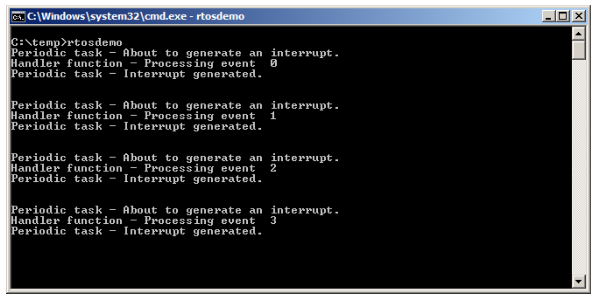
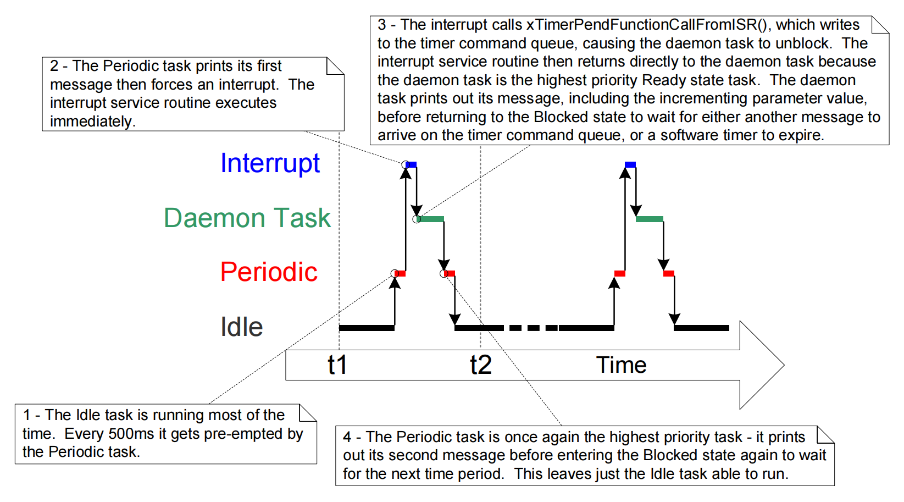
在中断服务程序中使用队列
二进制和计数信号量用于传递事件。队列用于传递事件和传输数据。
xQueueSendToFrontFromISR() 是 xQueueSendToFront() 在中断服务例程中使用安全的版本； xQueueSendToBackFromISR() 是 xQueueSendToBack() 在中断服务例程中使用安全的版本； xQueueReceiveFromISR() 是 xQueueReceive() 在中断服务例程中使用安全的版本。
xQueueSendToFrontFromISR() 和xQueueSendToBackFromISR() API 函数
BaseType_t xQueueSendToFrontFromISR(QueueHandle_t xQueue,
void *pvItemToQueue
BaseType_t *pxHigherPriorityTaskWoken
);
清单 105. xQueueSendToFrontFromISR() API 函数原型
BaseType_t xQueueSendToBackFromISR(QueueHandle_t xQueue,
void *pvItemToQueue,
BaseType_t *pxHigherPriorityTaskWoken
);
清单 106. xQueueSendToBackFromISR() API 函数原型
xQueueSendFromISR() 和 xQueueSendToBackFromISR() 在功能上是等效的。
表38. xQueueSendToFrontFromISR() 和 xQueueSendToBackFromISR() 参数和返回值
| 参数名称/返回值 | 描述 |
|---|---|
xQueue |
要向其发送 (写入) 数据的队列的句柄。该队列句柄将从用于创建队列的 xQueueCreate() 调用中返回。 |
pvItemToQueue |
指向将复制到队列中的数据的指针。 队列所能容纳的每个项目的大小是在创建队列时设置的，因此这许多字节将从 pvItemToQueue 复制到队列存储区域。 |
pxHigherPriorityTaskWoken |
单个队列上有可能会有一个或多个任务被阻塞，等待数据变为可用。调用 xQueueSendToFrontFromISR() 或 xQueueSendToBackFromISR() 可以使数据可用，从而导致这样一个任务离开阻塞状态。如果调用 API 函数导致一个任务离开阻塞状态，并且解除阻塞的任务的优先级高于当前执行的任务（被中断的任务），则 API 函数在内部会将 *pxHigherPriorityTaskWoken 设置为 pdTRUE。如果 xQueueSendToFrontFromISR() 或 xQueueSendToBackFromISR() 将此值设置为 pdTRUE，那么在中断退出之前应该进行上下文切换。这将确保中断直接返回到最高优先级的就绪状态任务。 |
| 返回值 | 有两个可能的返回值: |
从 ISR 中使用队列时的考虑因素
队列提供了一种将数据从中断传递到任务的简单便捷的方法，但如果数据到达频率较高，则使用队列效率不高。
FreeRTOS 下载中的许多演示程序都包含一个简单的 UART 驱动程序，该驱动程序使用队列将字符从 UART 的接收 ISR 中传递出来。在这些演示程序中，使用队列有两个原因：演示从 ISR 使用的队列，以及故意加载系统以测试 FreeRTOS 移植。以这种方式使用队列的 ISR 绝对不是为了代表高效的设计，除非数据到达速度放慢，否则建议生产代码不要复制该技术。适用于生产环境代码的更高效的技术包括 :
使用直接内存访问（DMA）硬件来接收和缓冲字符。这种方法实际上没有软件开销。然后可以使用直接到任务的通知 [1] 来解除对仅在检测到传输中断后才处理缓冲区的任务的阻塞。
[1] 直接到任务的通知提供了从 ISR 取消阻塞任务的最有效方法。第9章 任务通知 中介绍了直接到任务的通知。
将收到的每个字符复制到线程安全的 RAM 缓冲区 [2]。同样，直接任务通知可用于在收到完整消息后或在检测到传输中断后解除对将要处理缓冲区的任务的阻塞。
[2] 作为 FreeRTOS + TCP (http://www.FreeRTOS.org/tcp) 的一部分提供的 “Stream Buffer ( 流缓冲区 )” 可以用于此目的。
直接在 ISR 中处理收到的字符，然后使用队列将数据处理的结果 ( 而不是原始数据 ) 发送到一个任务。图 34 先前已对此进行了演示。
示例 19. 在一个队列中从一个中断中发送和接收信息
此示例演示在同一中断中使用的 xQueueSendToBackFromISR() 和 xQueueReceiveFromISR() 。如前所述，为方便起见，中断由软件产生。
创建一个周期性任务，每200毫秒向一个队列发送五个数字。只有在所有五个数字都已发送后，它才会产生一个软件中断。任务实现如清单 107 所示。
static void vIntegerGenerator(void *pvParameters)
{
TickType_t xLastExecutionTime;
uint32_t ulValueToSend = 0;
int i;
/* 初始化调用 vTaskDelayUntil() 所使用的变量。 */
xLastExecutionTime = xTaskGetTickCount();
for (;;)
{
/* 这是一个周期性任务。阻塞直到它再次运行的时间。任务将每 200ms 执行一次。 */
vTaskDelayUntil(&xLastExecutionTime, pdMS_TO_TICKS(200));
/* 向队列发送五个数字，每个数字比前一个数字高一。这些数字由中断服务例程从队列中读取。
中断服务例程总是清空队列，所以这个任务保证能够写入所有五个值，而不需要指定阻塞时间。 */
for (i = 0; i < 5; i++)
{
xQueueSendToBack(xIntegerQueue, &ulValueToSend, 0);
ulValueToSend++;
}
/* 生成中断，以便中断服务例程可以从队列中读取数值。
用于生成软件中断的语法取决于正在使用的 FreeRTOS 移植。
下面使用的语法只能用于 FreeRTOS Windows 移植，
在该移植中，这种中断只是模拟的。*/
vPrintString("Generator task - About to generate an interrupt.\r\n");
vPortGenerateSimulatedInterrupt(mainINTERRUPT_NUMBER);
vPrintString("Generator task - Interrupt generated.\r\n\r\n\r\n");
}
}
清单 107. 示例 19 中写入队列的任务的实现
中断服务例程重复调用 xQueueReceiveFromISR() ，直到周期性任务写入队列的所有值都被读出，并且队列为空。每个收到的值的最后两位被用作一个字符串数组的索引。然后通过调用 xQueueSendFromISR() ，将指向相应索引位置处的字符串的指针发送到不同的队列。中断服务例程的实现如清单 108 所示。
static uint32_t ulExampleInterruptHandler(void)
{
BaseType_t xHigherPriorityTaskWoken;
uint32_t ulReceivedNumber;
/* 字符串被声明为静态常量，以确保它们不被分配到中断服务例程的堆栈上，
因此即使在中断服务例程不执行时也存在。 */
static const char *pcStrings[] =
{
"String 0\r\n",
"String 1\r\n",
"String 2\r\n",
"String 3\r\n"};
/* 与往常一样，xHigherPriorityTaskWoken 被初始化为 pdFALSE，
以便能够检测到它在中断安全 API 函数中被设置为 pdTRUE。请注意，
由于中断安全API函数只能将 xHigherPriorityTaskWoken 设置为 pdTRUE，
因此在对 xQueueReceiveFromISR() 的调用和对 QueueSendToBackFromISR()
的调用中使用同一个 xHigherPriorityTaskWoken 变量是安全的。 */
xHigherPriorityTaskWoken = pdFALSE;
/* 从队列中读取，直到队列为空。 */
while (xQueueReceiveFromISR(xIntegerQueue,
&ulReceivedNumber,
&xHigherPriorityTaskWoken) != errQUEUE_EMPTY)
{
/* 将接收到的值截断到最后两位 (包括值 0 到 3 )，
然后用截断的值作为 pcStrings[] 数组的索引，
选择一个字符串 (char *) 发送到另一个队列上。 */
ulReceivedNumber &= 0x03;
xQueueSendToBackFromISR(xStringQueue,
&pcStrings[ulReceivedNumber],
&xHigherPriorityTaskWoken);
}
/* 如果从 xIntegerQueue 接收导致任务离开阻塞状态，
并且如果离开阻塞状态的任务的优先级高于处于运行状态的任务的优先级，
那么 xHigherPriorityTaskWoken 将在 xQueueReceiveFromISR() 中被设置为 pdTRUE。
如果向 xStringQueue 发送导致任务离开阻塞状态，
并且如果离开阻塞状态的任务的优先级高于处于运行状态的任务的优先级，
那么 xHigherPriorityTaskWoken 将在 xQueueSendToBackFromISR() 中被设置为 pdTRUE。
xHigherPriorityTaskWoken 被用作 portYIELD_FROM_ISR() 的参数。
如果 xHigherPriorityTaskWoken 等于 pdTRUE，
那么调用 portYIELD_FROM_ISR() 将请求进行上下文切换。
如果 xHigherPriorityTaskWoken 仍然是 pdFALSE，
那么调用 portYIELD_FROM_ISR() 将没有任何作用。
Windows 移植使用的 portYIELD_FROM_ISR() 的实现包括一个 return 语句，
这就是为什么这个函数没有显式返回值的原因。 */
portYIELD_FROM_ISR(xHigherPriorityTaskWoken);
}
清单 108. 示例 19 所使用的中断服务例程的实现
从中断服务例程接收字符指针的任务在队列上阻塞，直到有消息到达，，并在接收到每个字符串时打印出来。它的实现如清单 109 所示。
static void vStringPrinter( void *pvParameters )
{
char *pcString;
for( ;; )
{
/* 在队列上阻塞以等待数据到达 */
xQueueReceive( xStringQueue, &pcString, portMAX_DELAY );
/* 打印出接收到的字符串。*/
vPrintString( pcString );
}
}
清单 109. 示例 19 中打印从中断服务例程接收到的字符串的任务
像往常一样，main() 在启动调度程序之前创建所需的队列和任务。它的实现如清单 110 所示。
int main( void )
{
/* 在使用队列之前，必须首先创建队列。创建本例所使用的两个队列。
一个队列可以保存 uint32_t 类型的变量，另一个队列可以保存 char * 类型的变量。
两个队列最多可以容纳10个项目。真实的应用程序应该检查返回值以确保队列已被成功创建。 */
xIntegerQueue = xQueueCreate( 10, sizeof( uint32_t ) );
xStringQueue = xQueueCreate( 10, sizeof( char * ) );
/* 创建使用队列将整数传递给中断服务例程的任务。任务以优先级 1 创建。 */
xTaskCreate( vIntegerGenerator, "IntGen", 1000, NULL, 1, NULL );
/* 创建打印出中断服务例程发送给它的字符串的任务。此任务以较高的优先级 2 创建。 */
xTaskCreate( vStringPrinter, "String", 1000, NULL, 2, NULL );
/* 安装软件中断的处理程序。这样做所需的语法取决于正在使用的 FreeRTOS 移植。
这里显示的语法只能用于 FreeRTOS Windows 移植，在那里这种中断只是模拟的。 */
vPortSetInterruptHandler( mainINTERRUPT_NUMBER, ulExampleInterruptHandler );
/* 启动调度程序，使创建的任务开始执行。 */
vTaskStartScheduler();
/* 如果一切顺利，那么main()将永远不会到达这里，因为调度程序现在将运行任务
如果 main() 确实到达这里，那么很可能是没有足够的堆内存可用于创建空闲任务。
第 2 章提供了有关堆内存管理的更多信息。 */
for( ;; );
}
清单 110. 示例 19 的 main() 函数
执行示例 19 时产生的输出如图 59 所示。可以看出，中断接收了所有五个整数，并产生了五个字符串作为响应。图 60 中给出了更多的解释。
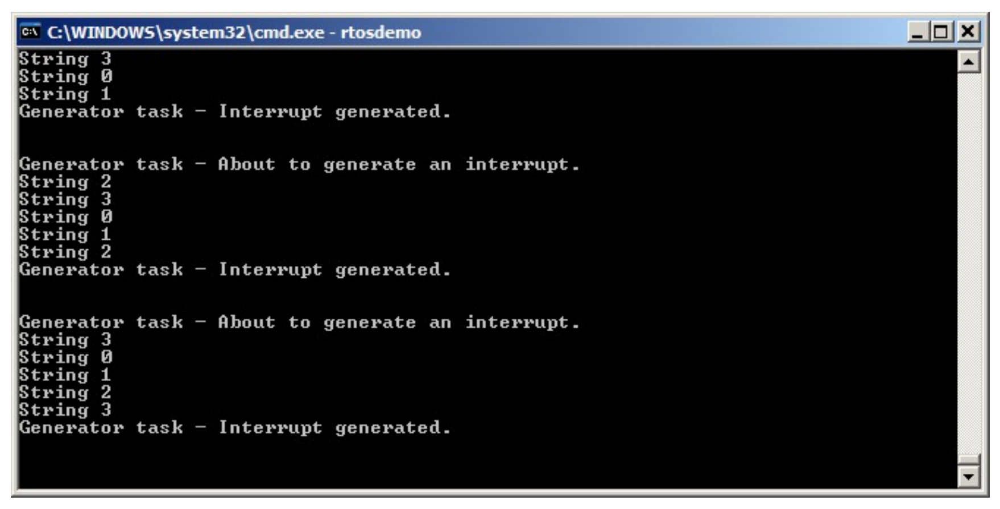
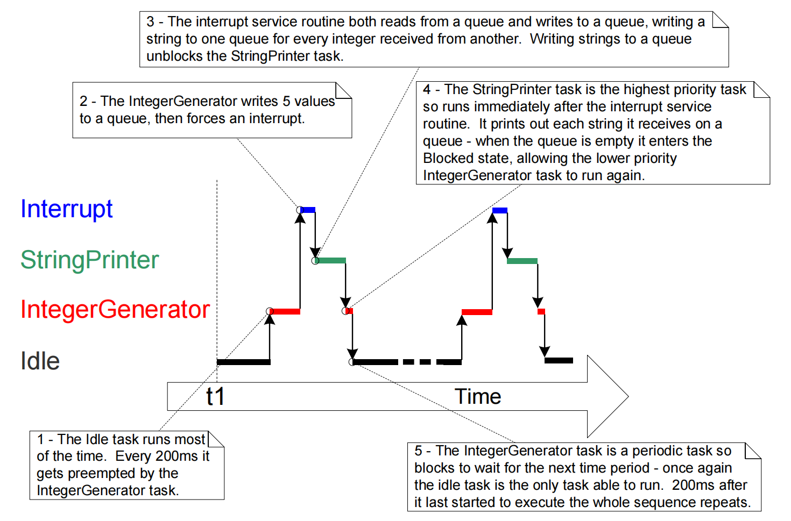
中断嵌套
在任务优先级和中断优先级之间出现混淆是很常见的。本节讨论中断优先级，本节讨论中断优先级，即中断服务例程 ( ISR ) 相对于彼此执行的优先级。分配给任务的优先级与分配给中断的优先级没有任何关系。硬件决定 ISR 何时执行，而软件决定任务何时执行。响应硬件中断而执行的 ISR 将中断任务，但任务不能抢占 ISR。
支持中断嵌套的移植需要在 FreeRTOSConfig.h 中定义表 39 中详述的一个或两个常量。 configMAX_SYSCALL_INTERRUPT_PRIORITY 和 configMAX_API_CALL_INTERRUPT_PRIORITY 都定义相同的属性。较旧的 FreeRTOS 移植使用 configMAX_SYSCALL_INTERRUPT_PRIORITY，较新的 FreeRTOS 移植使用 configMAX_API_CALL_INTERRUPT_PRIORITY。
表 39. 控制中断嵌套的常量
| 恒定 | 描述 |
|---|---|
configMAX_SYSCALL_INTERRUPT_PRIORITY or configMAX_API_CALL_INTERRUPT_PRIORITY |
设置可以调用中断安全 FreeRTOS API 函数的最高中断优先级。 |
configKERNEL_INTERRUPT_PRIORITY |
设置滴答 ( tick ) 中断使用的中断优先级，并且必须始终设置为尽可能低的中断优先级。 如果使用的FreeRTOS移植没有同时使用 configMAX_SYSCALL_INTERRUPT_PRIORITY 常量，那么任何使用中断安全的FreeRTOS API 函数的中断也必须以 configKERNEL_INTERRUPT_PRIORITY 定义的优先级执行。 |
每个中断源都有一个数字优先级和一个逻辑优先级 :
数字优先级
数字优先级只是分配给中断优先级的数字。例如，如果一个中断被分配的优先级为7，那么它的数字优先级就是 7。 同样，如果一个中断被分配的优先级为 200，那么它的数字优先级就是 200。
逻辑优先级
一个中断的逻辑优先级描述了该中断相对于其他中断的优先级。
如果两个不同优先级的中断同时发生，则处理器将先执行两个中断中逻辑优先级较高的一个中断，然后再执行两个中断中逻辑优先级较低的一个中断。
一个中断可以中断 ( 嵌套 ) 任何具有较低逻辑优先级的中断，但一个中断不能中断 ( 嵌套 ) 任何具有相同或更高逻辑优先级的中断。
中断的数字优先级和逻辑优先级之间的关系取决于处理器架构；在某些处理器上，分配给一个中断的数字优先级越高，该中断的逻辑优先级就越高，而在其他处理器架构上，分配给一个中断的数字优先级越高，该中断的逻辑优先级就越低。
通过将 configMAX_SYSCALL_INTERRUPT_PRIORITY 设置为比 configKERNEL_INTERRUPT_PRIORITY 更高的逻辑中断优先级可以创建一个完整的中断嵌套模型。图 61 对此进行了演示，其中显示了以下场景：
- 处理器具有 7 个唯一的中断优先级。
- 分配数字优先级 7 的中断比分配数字优先级 1 的中断具有更高的逻辑优先级。
configKERNEL_INTERRUPT_PRIORITY被设置为 1 。configMAX_SYSCALL_INTERRUPT_PRIORITY被设置为 3 。
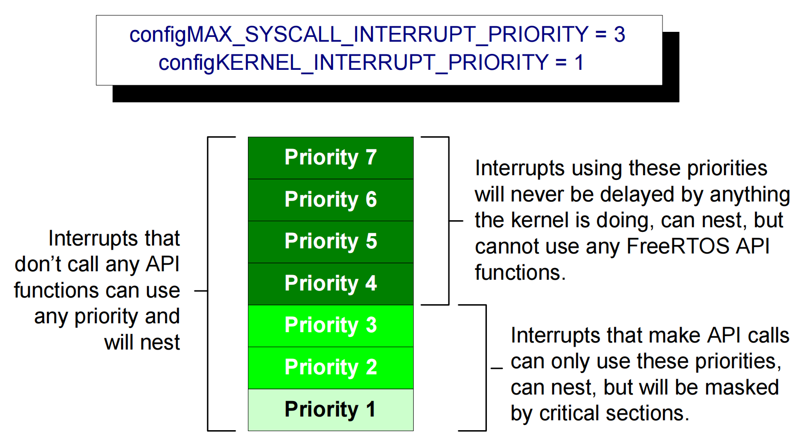
参考图 61：
- 当内核或应用程序位于临界段时，使用优先级 1 到 3 ( 含 ) 的中断将被阻止执行。以这些优先级运行的 ISR 可以使用中断安全的 FreeRTOS API 函数。临界段的描述见第 7 章。
- 使用优先级 4 或更高优先级的中断不受临界段的影响，因此调度程序所做的任何操作都不会阻止这些中断立即执行——在硬件本身的限制范围内。以这些优先级执行的 ISR 无法使用任何 FreeRTOS API 函数。
- 通常，需要非常严格的时间精度的功能 ( 例如电机控制 ) 会使用高于
configMAX_SYSCALL_INTERRUPT_PRIORITY的优先级，以确保调度器不会在中断响应时间中引入抖动。
对ARM Cortex-M 和ARM GIC用户的说明
Cortex-M 处理器上的中断配置很混乱，并且容易出错。为了协助您的开发，FreeRTOS Cortex-M 移植会自动检查中断配置，但前提是定义了 configASSERT() 。configASSERT() 在 11.2 节中描述。
Cortex-M：本节仅部分适用于
Cortex-M0和Cortex-M0+内核。
ARM Cortex 内核和 ARM 通用中断控制器 (GIC —- Generic Interrupt Controller ) 使用数字上的低优先级数字来表示逻辑上的高优先级中断。这似乎违反直觉，并且很容易忘记。如果您希望为中断分配逻辑上较低的优先级，则必须为其分配较高的数字值。如果您希望为中断分配逻辑上较高的优先级，则必须为其分配较低的数字值。
Cortex-M 中断控制器允许使用最多 8 位来指定每个中断优先级，使 255 成为可能的最低优先级。0 是最高优先级。然而，Cortex-M 微控制器通常仅实现 8 个可能位的子集。实际实现的位数取决于微控制器系列。
当仅实现了 8 个可能位的子集时，只能使用字节的最高有效位，而最低有效位则未实现。未实现的位可以取任何值，但通常将它们设置为 1 。 图 62 对此进行了演示，该图显示了二进制 101 的优先级如何存储在一个实现了 4 个优先位的Cortex-M微控制器中。
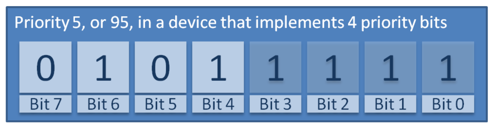
在图 62 中，二进制值 101 已移至最高有效四位，因为未实现最低有效四位。 未实现的位已设置为 1。
某些库函数期望在将优先级值向上移至已实现的 ( 最高有效 ) 位之后指定优先级值。在使用这样的函数时，可以将图 62 所示的优先级指定为十进制 95 ( 0101 1111 ) 。十进制 95 将二进制 101 上移 4 以生成二进制 101nnnn ( 其中 ‘ n ‘ 是一个未实现的位 )，将未实现的位设置为 1 以生成二进制 1011111 。
某些库函数期望在将优先级值向上移至已实现的 ( 最高有效 ) 位之前指定优先级值。使用此类函数时，图 62 中所示的优先级必须指定为十进制 5。十进制 5 是没有任何移位的二进制 101。
也就是说在使用函数写入优先级寄存器时，要设置的优先级通常作为函数参数传入，有些函数要求你传入的参数要提前将优先级移至对应的有效位，函数直接将参数写入寄存器；有些函数可以直接将要设置的优先级作为参数传入，函数会帮你在内部将参数做好移位后再写入寄存器。
configMAX_SYSCALL_INTERRUPT_PRIORITY 和 configKERNEL_INTERRUPT_PRIORITY 必须以允许它们直接写入 Cortex-M 寄存器的方式来指定，所以在优先级值被上移到实现的位后。
configKERNEL_INTERRUPT_PRIORITY 必须始终设置为可能的最低中断优先级。 未实现的优先级位可以设置为1，因此无论实际实现了多少优先级位，该常量始终可以设置为 255。
Cortex-M中断的默认优先级为 0 —— 可能的最高优先级。Cortex-M 硬件的实现不允许 configMAX_SYSCALL_INTERRUPT_PRIORITY 被设置为 0 ，所以使用 FreeRTOS API 的中断的优先级绝不能保留为其默认值。